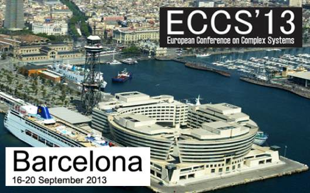
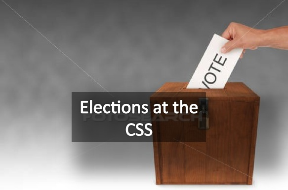
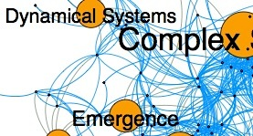

Complex Systems Society
Complex Systems SocietyEuropean Conference on Complex Systems 2013
The next European Conference on Complex Systems will take place in Barcelona, 16 to 20 September 2013 in the Word Trade Center Barcelona. Since 2004 the ECCS conference has developed its activities aiming to promote all aspects of Complex Systems Science, as well as organizing the international scientific community of complex systems researchers.
The Call for organizing satellite meetings is now open.

Alessandro Vespignani
elected president of the CSS

Alessandro Vespignani, one of the most active and distinguished researchers in the complex systems community, has been elected president of the Complex Systems Society by the CSS Council, on the 3rd of October, 2012. Alessandro Vespignani will start his new function as soon as the on-going electoral process is complete, by early November 2012. More information about the new CSS President here.

Where are you in the CS community ?
We are pleased to announce the beta release of the CSS Online Community Explorer which maps interactively all CSS members. By applying network tools to our community we intend to improve the visibility of CSS members towards peers and other stakeholders, and map the relevant subcommunities matching your interests.
Interactive mapping of ECCS'12 participants: ECCS'12 partcipants are invited to add the community tag #eccs12 in their profile.

CSS Digital Library
The CSS Digital Library provides a collection of documents, including videos, slides, articles and reports concerning events organized in the context of the Complex Systems Society, or by CSS members. Some of the recent collections available are:
- Workshop Aesthetics at the Heart of Science, FET'09, Prague, April 23, 2009
- ECCS'10 Plenary Talks, Lisbon, September 13-17, 2010
- "Young Researchers Session", ECCS'10, Lisbon, September 15, 2010
- 4th French Complex Systems Summer School 2010

CSS Wiki
- Announce an event
- Suggest news
- Create a webpage for an event or a project
- Register your record in the Who's Who
CSS Activities
News
Reports from ECCS11 Bursary Winners
2012-03-06
ASSYST provided 32 bursaries to people to attend ECCS’11. The bursaries provided limited contributions towards the conference fee and/or travel expenses for female scientists, young researchers, and others who would otherwise be unable to attend ...
Workshop on Mathematics for the Dynamics of Multilevel Systems
2012-03-06
The meeting Mathematics for the Dynamics of Multilevel Systems was held at the European Centre for Living Technology, Venice, 26th - 28th February 2012 ...

CSS Agenda - Events and Jobs
ECCS'13 - European Conference on Complex Systems
16 Sep 2013 - 20 Sep 2013